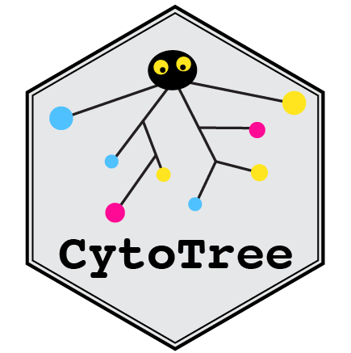

CytoTree Tutorial
2020-10-31
Chapter 1 Introduction

Multidimensional flow and mass cytometric assays are widely used for cellular subpopulation identification, tissue microenvironment composition determination, clinical immunophenotyping and differential lineage reconstruction. Modern fluorescence-based flow cytometers typically can detect up to 20 features in one routine experiment, whereas mass cytometers increase the capacity to nearly 50 features. With the rapidly increasing dimensionality and throughput of flow and mass cytometry data, an optimized and complete workflow has yet to be developed to perform trajectory inference and pseudotime estimation on flow and mass cytometry data.
Here we present CytoTree, an R/Bioconductor package for trajectory inference, pseudotime estimation and visualization of flow and mass cytometry data. The CytoTree package offers a complete up-to-date analysis workflow for flow and mass cytometry data that includes subpopulation classification, dimensionality reduction, trajectory construction, differentially expressed marker calculation, pseudotime estimation, intermediate state identification and visualization. The CytoTree runs on several platforms, such as UNIX, Windows and macOS, and provides an up-to-date, feature-rich and readily scalable workflow.
In this tutorial, we will present:
- How to install CytoTree.
- A quick start tutorial of CytoTree.
- Detailed functionality description of CytoTree.
- A heterogeneity-based use case using CytoTree.
- A time-course use case using CytoTree.
- Structure of CYT object.